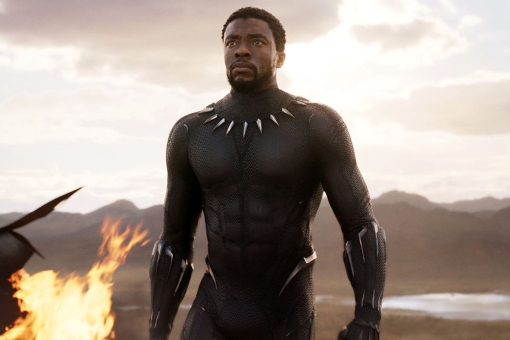
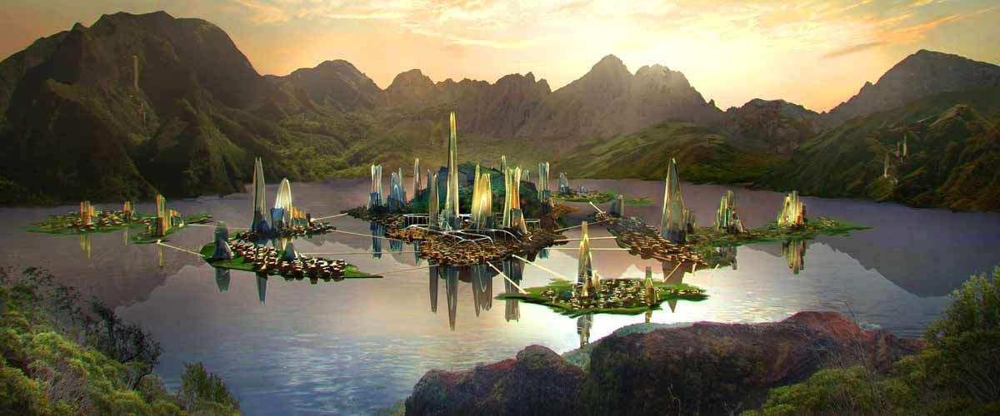
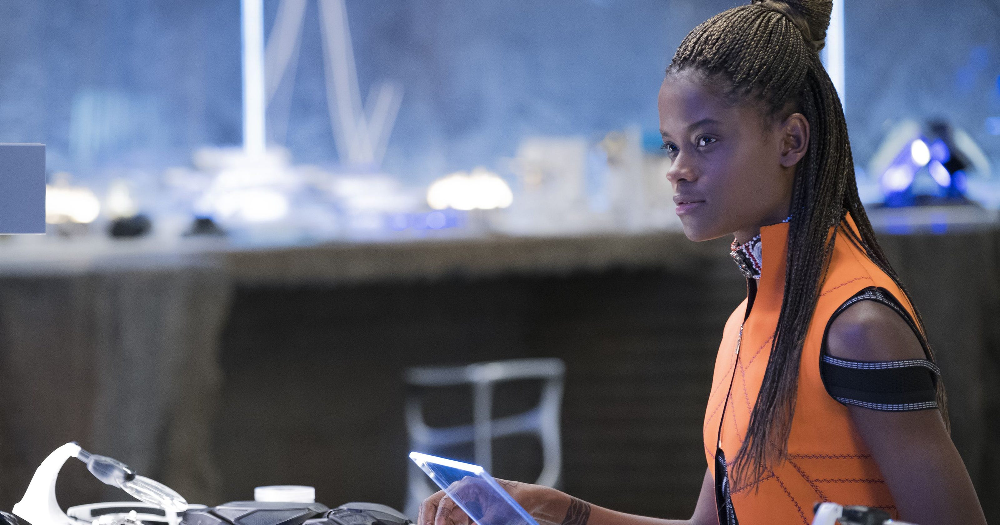
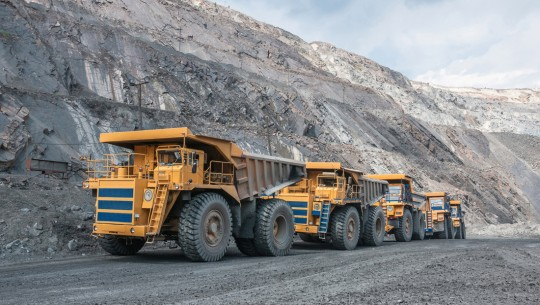

Black Panther est l’un des personnages Marvel ayant fait succès au cinéma en 2018. Etant le roi du Wakanda, il possède un costume en Vibranium qui le rend invulnérable. Malgré cela, le Vibranium peut certes lui sauver la vie, mais aussi mettre en danger le monde suite à la destruction des sols afin de se procurer ce fameux métal.
Qui est
Black Panther ?
La panthère noir, plus connu sous le nom
de « Black Panther ». De son vrai nom T’challa, il
est le premier super-héros noir apparaissant dans
l’univers Marvel. T’Challa est le prince héritier du
Wakanda, un royaume fictif Africain.

Image de Black Panther
Ce dernier possède une force surhumaine,
ainsi qu’une agilité et intelligence incroyable.
Ces capacités et pouvoirs sont renforcés
notamment par son costume conçu totalement
en Vibranium.

Le pays de Wakanda
En effet, le Wakanda est une nation africaine
en avance technologiquement, qui possèdent
des mines de Vibranium. Ce métaux fictif
permet à Black Panther de résister à toute
attaque.
Par ailleurs, sans sa soeur Shira, T’challa
ne pourrait pas augmenté sa force. En effet, sa
soeur est une jeune scientifique surdouée qui
lui crée de nombreuses armes et améliore sans
cesse son costume pour qu’il devienne de plus
en plus fort et invulnérable.

Shira, soeur de Black Panther
Qu'est ce que
le Vibranuim ?
Le Vibranium est un métal fictif que l’on peut
retrouver dans le film Black Panther. En effet, ce
métal possède un pouvoir qui permet
d’absorber les ondes. Shuri utilise ce métal
dans le costume de Black Panther afin de
convertir les ondes stockée en une sorte de «
faisceau de lumière explosive ». Ainsi, Black
Panther utilise son costume comme une arme
face à ses ennemis.
De plus, ce Vibranium est également utilisé
dans d’autre armes afin de les rendre plus
résistantes et plus puissantes en cas de chocs.
C’est le cas du bouclier de Captain America qui
est également fait entièrement de Vibranium.
Ainsi, cela permet au soldat d’être invulnérable
face aux balles ou explosions derrière son
bouclier.

Extraction de Lithium
Ce métal extrêmement résistant est donc
situé comme toute sorte de minerai sous la
terre. Mais dans le film de Black Panther,
aucune allusion est apparente face aux manière
d’extraire ce métal. Est-ce que cela détruit
l’environnement de Wakanda ?
Les problèmes liés à
Black Panther
Black Panther possède plusieurs costumes
qui sont tous issus du Vibranium, mais le
problème est que ce n’est pas le seule qui
utilisent cette ressource rare. En effet, de
nombreuses expéditions d’autres tributs sont
faites au Wakanda afin de s’emparer d’un
échantillon de Vibranium
Bien que les membres du Wakanda
cherchent quelque fois a défendre leurs
ressources, le Vibranium reste tout de même
exploité par les Wakandais. Le Vibranium est
donc sujet à une extraction de masse pour
renforcer et améliorer toutes sortes
d’inventions.
Extraction de Lithium
Et une extraction de masse n’est pas
synonyme à la protection de l’environnement.
Soit est-ce que Black Panther peut être un
super vilain face à l’environnement ? Est ce
que son emprunte carbone met en danger la
planète à cause de sa surconsommation de
Vibranium ?
Pour répondre à cela, il faut comprendre les
conséquences de l’extraction du Vibranium en
prenant l’exemple d’une terre rare similaire comme le
Lithium.